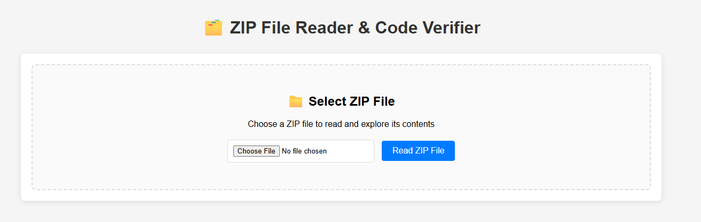
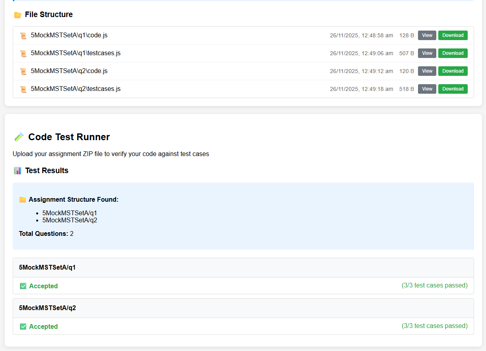
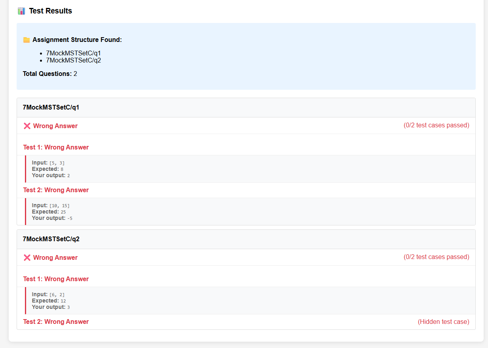

WebsiteDuring FOP's MST/EST, it is a common issue that students submit the wrong zip file.
That is, at the end of the test, they are supposed to zip up their code and submit on brightspace. In a few occasion, students wrongly submitted the original, blank, zip instead of the one with their code.
As per our current policy, doing so results in scoring 0 for the component with no second chance given.
Hence, this tool seeks provide students a chance to first verify their submission. It allows them to upload their zip file and have their code executed against the test cases to verify their results before the proceed to submit on brightspace.
At the start, Copilot generated the entire project within a single HTML file, this made it difficult for me to read and understand the code base. It also became too long for Copilot to fit the entire thing within the context window, causing it to give rubbish every once in a while. I decided instead of refactor the file into several smaller classes.
During the refactoring, as I did not give instruction on how I wanted it to be structured, copilot went with the classes approach, which honestly wasn't my preference but I didn't bother much with it. What I controlled though was that it initially referenced other classes through the global scope and through static methods. Recognizing that such setup is hard to test in isolation, I requested it change to a format that allows for dependency injection.
It was also unaware of the idea that students of different operating systems may be using the app, hence the slash (/) in the file path may differ (e.g. windows uses / whereas linux uses \). This breaks some of the scenarios, but thankfully it's easy enough to implement a intermediate processing step to convert all such slashes.
Not my accomplishment, but quite amazed (but annoyed at the same time), but the additional scope that copilot introduced was pretty helpful. For example, I didn't intended to display all the files in the zip, just execute it against the testcases and report the result was all I wanted. But it went ahead to introduce these feature, even including things like tagging a specific emoji to different file type.
But otherwise, was quite proud to finish a version of the app within 1 afternoon.

